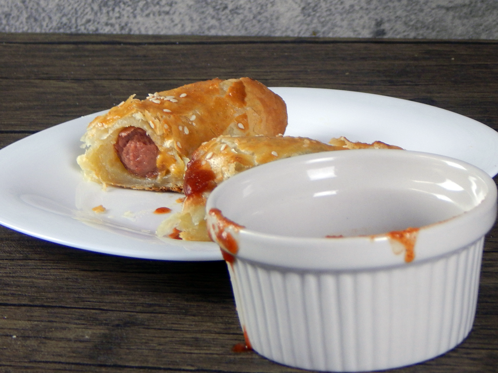

Theon's Sausage

Description:
Theons favorite toy wrapped in puff pastry and fried to perfection!
“Those girls weren’t lying, you had a good sized cock. What? No…pork sausage.
What, you think I’m some sort of savage?”
- Ramsey Bolton
Ingredients:
- "Sausage"
- Puff Pastry
- Cheddar Cheese
- 1 Egg
- Sesame Seeds
- Kosher Salt
Steps:
- Preheat oven to 400° F
- (optional) Boil hot dogs according to package instruction, or for pre-cooked brats, pan-sear until brown.
- Divide the puff pastry in half, and then halve it again. Place cheese in the middle of each pastry diagonally and place the hot dog (or bratwurst) on top.
- Beat the egg with a bit of water to make an egg wash.
- Wet the edges of the pastry with some water and fold each sheet over the sausage. Seal with a fork and brush each pocket with egg wash. Sprinkle with sesame seed and kosher salt (optional).
- Bake for 15-20 minutes until golden. Serve with BBQ sauce.